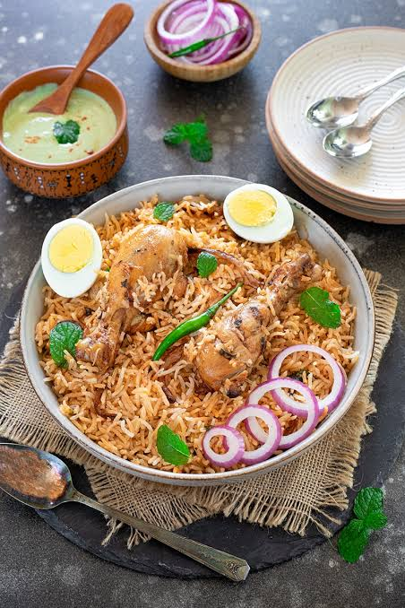
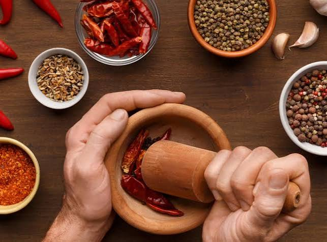
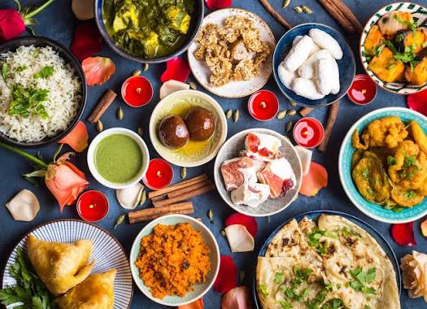

Experience the authentic flavors of Bangladesh right here in the heart of the city
View Our MenuBangla Bistro has been serving the finest traditional Bangladeshi dishes since 2010. Our chefs bring decades of culinary expertise from Dhaka, Chittagong, and Sylhet to create an unforgettable dining experience. From the aromatic biryanis of Old Dhaka to the delicate sweets of Rajshahi, every dish tells a story of heritage and passion.
We believe that food is more than just sustenance—it is a celebration of culture, family, and community. That's why we source our spices directly from Bangladesh and prepare each meal with the same love and care that you would find in a traditional Bengali household. Whether you're craving a hearty Kacchi Biryani or a light Panta Bhat, our menu has something to satisfy every palate.


